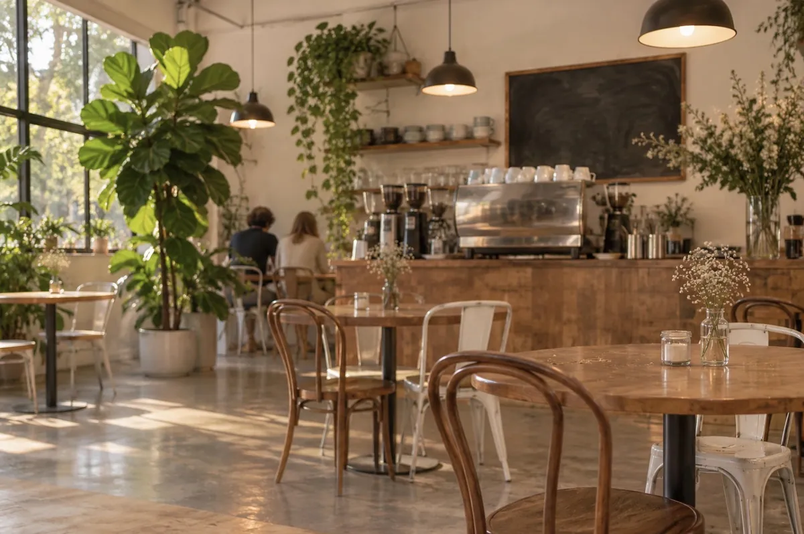
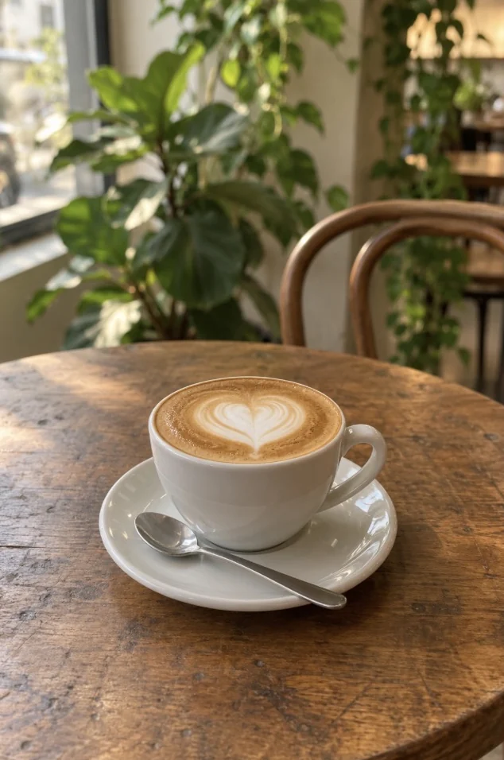
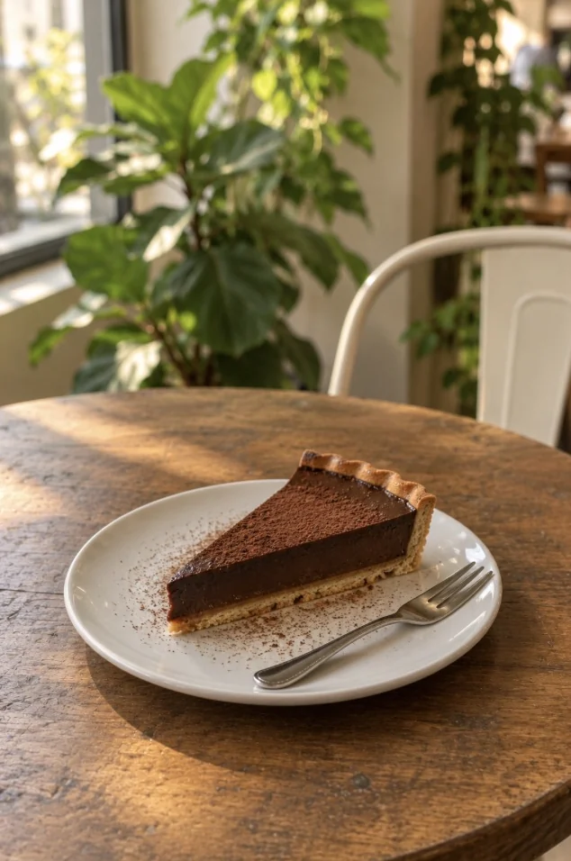
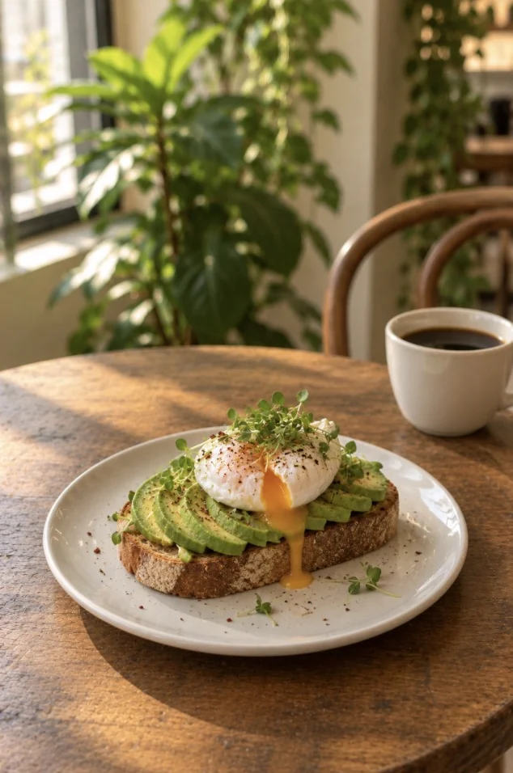

Wir sind Anna und Jonas. Seit 2012 backen wir jeden Morgen frisch für dich.
Mehl aus der Mühle im Nachbarort, Obst von Höfen aus der Umgebung, dazu Frühstück bis 14 Uhr und genug Zeit, um in Ruhe anzukommen.

Öffnungszeitenansehen


Wir sind Anna und Jonas. Seit 2012 backen wir jeden Morgen frisch für dich.
Mehl aus der Mühle im Nachbarort, Obst von Höfen aus der Umgebung, dazu Frühstück bis 14 Uhr und genug Zeit, um in Ruhe anzukommen.
| Mo | Ruhetag |
| Di – Fr | 8:00 – 18:00 |
| Sa & So | 9:00 – 18:00 |
Vom 24. bis 26. Dezember haben wir geschlossen.
Ihr seid eine größere Gruppe, wollt feiern oder Kuchen vorbestellen? Ruf kurz an oder schreib uns.